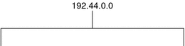
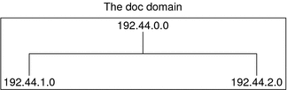

Previous
Previous
Network Information Service (NIS) (Overview)
This chapter provides an overview of the Network Information Service (NIS).
NIS is a distributed naming service. It is a mechanism for identifying and locating network objects and resources. It provides a uniform storage and retrieval method for network-wide information in a transport-protocol and media-independent fashion.
This chapter covers the following topics.
NIS Introduction
By running NIS, the system administrator can distribute administrative databases, called maps, among a variety of servers (master and slaves). The administrator can update those databases from a centralized location in an automatic and reliable fashion to ensure that all clients share the same naming service information in a consistent manner throughout the network.
NIS was developed independently of DNS and has a slightly different focus. Whereas DNS focuses on making communication simpler by using machine names instead of numerical IP addresses, NIS focuses on making network administration more manageable by providing centralized control over a variety of network information. NIS stores information not only about machine names and addresses, but also about users, the network itself, and network services. This collection of network information is referred to as the NIS namespace.
Note - In some contexts machine names are referred to has host names or machine names. This discussion uses machine, but some screen messages or NIS map names might use host or machine.
NIS Architecture
NIS uses a client-server arrangement. NIS servers provide services to NIS clients. The principal servers are called master servers, and for reliability, they have backup, or slave servers. Both master and slave servers use the NIS information retrieval software and both store NIS maps.
NIS uses domains to arrange the machines, users, and networks in its namespace. However, it does not use a domain hierarchy; an NIS namespace is flat.
Thus, this physical network would be arranged into one NIS domain.
An NIS domain cannot be connected directly to the Internet using just NIS. However, organizations that want to use NIS and also be connected to the Internet can combine NIS with DNS. You can use NIS to manage all local information and use DNS for Internet host lookup. NIS provides a forwarding service that forwards host lookups to DNS if the information cannot be found in an NIS map. The Solaris system also allows you to set up the nsswitch.conf file so that hosts lookup requests go only to DNS, or to DNS and then NIS if not found by DNS, or to NIS and then DNS if not found by NIS. See Chapter 2, The Name Service Switch (Overview) for details.
NIS Machine Types
There are three types of NIS machines.
Master server
Slave servers
Clients of NIS servers
Any machine can be an NIS client, but only machines with disks should be NIS servers, either master or slave. Servers are also clients, typically of themselves.
NIS Servers
The NIS server does not have to be the same machine as the NFS file server.
NIS servers come in two varieties, master and slave. The machine designated as master server contains the set of maps that the system administrator creates and updates as necessary. Each NIS domain must have one, and only one, master server, which can propagate NIS updates with the least performance degradation.
You can designate additional NIS servers in the domain as slave servers. A slave server has a complete copy of the master set of NIS maps. Whenever the master server maps are updated, the updates are propagated among the slave servers. Slave servers can handle any overflow of requests from the master server, minimizing “server unavailable” errors.
Normally, the system administrator designates one master server for all NIS maps. However, because each individual NIS map has the machine name of the master server encoded within it, you could designate different servers to act as master and slave servers for different maps. To minimize confusion, designate a single server as the master for all the maps you create within a single domain. The examples in this chapter assume that one server is the master for all maps in the domain.
NIS Clients
NIS clients run processes that request data from maps on the servers. Clients do not make a distinction between master and slave servers, since all NIS servers should have the same information.
Note - The Solaris operating system does not support a configuration in which a NIS client and a Native LDAP client co-exist on the same client machine.